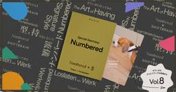

フロントエンド・デザイン直近7日・スコア順
このトピックだけを購読する: RSS

これには驚いた！ 今度はExcelやWordやPower Pointをオープンソースで再構築、Win、Mac、Linux、Web対応で無料 248
248 コリス
コリス
はてブ248 · 新しく出た
設計・SRE・基盤 / フロントエンド・デザイン
今週はCrafting Appsの記事ばかりになっています。 Photoshopを再構築したオープンソース版「PhotoCraft」の日本語対応など、Adobeのアプリ7種類を毎日のようにアップデート
2日前

無料のオープンソースEPUB・PDFリーダー「Readest」、Windows・Linux・macOS・Android・iOS・ブラウザ・KOReaderでハイライト・メモ・分割画面読書・AIテキスト読み上げ・AI自動翻訳・クラウド同期が可能 5 GIGAZINE
GIGAZINE
はてブ5 · 新しく出た
AI・LLM / 設計・SRE・基盤 / フロントエンド・デザイン
電子書籍のハイライトやメモだけでなく、2冊を横並びにする分割画面読書・AI音声読み上げ・文章や書籍全体の翻訳・端末間のクラウド同期まで利用でき、Windows・Linux・macOS・Android・iOS・ブラウザに対応する「Readest」が公開されています。
14時間前

Anthropic、「Claude」の新機能「Dashboards」「Motion」を発表。「Docs」「Slides」「Design」は無償でも提供／データからダッシュボード、アイデアからアニメーションを生成 163窓の杜
はてブ163 · 新しく出た
AI・LLM / フロントエンド・デザイン / カルチャー
米Anthropicは10月8日（現地時間、以下同）、「Claude」の新機能「Claude Dashboards」と「Claude Motion」を発表した。併せて、テスト提供されていた「Docs」「Slides」「Design」がベータ版を卒業し、無料（Free）を含むすべてのプランで利用できるようになったこともアナウンスされた。
2日前

PhotoshopやIllustratorをオープンソースで再構築した「Crafting Apps」が日本語フォント、UIの日本語化に対応 414 コリス
はてブ414 · 新しく出た
フロントエンド・デザイン
10/5に紹介した、PhotoshopやIllustratorをオープンソースで再構築した「Crafting Apps」が早くも日本語フォント、UIの日本語化に対応した模様。 下記の画像はCrafti
3日前

【オランダのクリエイティブの現場から Vol.8】型を持たないという流儀 ｜Numbered（アムステルダム）
フロントエンド・デザイン
iDID – クリエイターのための情報メディアフロントエンド・デザイン
いよいよ最終回に紹介するのは、特定の業種や固定されたデザインスタイルに縛られることなく、世界中のクライアントから指名が絶えないクリエイティブエージェンシー「Numbered」です。
17時間前

Web制作者は要チェック！ 余分なマージンを取り除くmargin-trimプロパティなど、Chrome 155で追加されたCSSの新機能 2 コリス
新しく出た
フロントエンド・デザイン
10/7にアップデートされたChrome 155に追加された、CSSとUIに関する新しい機能を紹介します。 今回のアップデートで注目すべきは、カウンターのスタイルをインラインで定義できるsymbols
3日前

デバイス操作はAIエージェントの時代へ。mobile-mcpを活用したAndroid UI/E2Eテストの挑戦
AI・LLM · フロントエンド・デザイン · 組織・マネジメント・QA
LINEヤフー Tech Blog (LY Corporation Tech BlogAI・LLM / フロントエンド・デザイン / 組織・マネジメント・QA
こんにちは。LINEでAndroidアプリの開発を担当しているMoriです。この記事では、DroidKaigi 2026で発表した「デバイス操作はAIエージェントの時代へ。mobile-mcpを活用し...
5日前